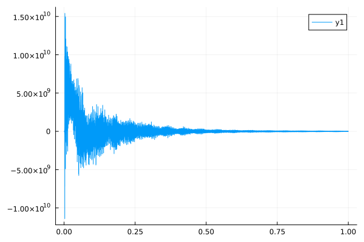

User Manual
Getting started
NMR.jl is a Julia package. It is installed using the Julia package management system:
using Pkg
Pkg.add(url="https://github.com/marcel-utz/NMR.jl") Updating git-repo `https://github.com/marcel-utz/NMR.jl`
Resolving package versions...
Updating `~/Source/NMR.jl/docs/Project.toml`
[29608d60] ~ NMR v0.9.0 `..` ⇒ v0.9.0 `https://github.com/marcel-utz/NMR.jl#master`
Updating `~/Source/NMR.jl/docs/Manifest.toml`
[29608d60] ~ NMR v0.9.0 `..` ⇒ v0.9.0 `https://github.com/marcel-utz/NMR.jl#master`
Precompiling project...
✓ NMR
1 dependency successfully precompiled in 3 seconds. 235 already precompiled. 2 skipped during auto due to previous errors.
1 dependency precompiled but a different version is currently loaded. Restart julia to access the new versionOnce the install finishes, you are ready to go.
Loading NMR Data
To start processing, you need to load some NMR data. There are commands to load raw data from various spectrometer vendors. Typically, the data is loaded raw. This means that only the time-domain spectral data is returned, and you have to manually convert it to a data object that can be further processed.
Here is an example:
import NMR
f=NMR.readBrukerFID("../../test/data/10/fid")32768-element Vector{ComplexF64}:
3676.8359375 - 5472.7578125im
-11968.375 + 27875.5546875im
15609.0859375 - 9893.796875im
-15682.2578125 + 39816.0546875im
33125.0390625 - 43448.921875im
-39115.0625 + 68474.375im
58771.6796875 - 87289.2109375im
-73760.15625 + 122312.8203125im
103695.46875 - 158472.9296875im
-129576.25 + 203457.8046875im
⋮
-2.7019769578125e7 - 1.1946442921875e7im
-3.02714276171875e7 + 1.281115409375e7im
-1.5218733953125e7 + 3.430162490625e7im
8.7481928203125e6 + 3.86090874296875e7im
0.0 + 0.0im
0.0 + 0.0im
0.0 + 0.0im
0.0 + 0.0im
0.0 + 0.0imfreturns an array with the complex data points contained in the fid file. To convert this to useable time-domain data, you need to convert it into a Data1D object.
NMR.Data1D — TypeData1D(f<:AbstractArray,start<:Real,stop<:Real)returns a data structure to hold a 1D NMR dataset either in the time or the frequency domain. Data1D objects store an index (range of time points or frequency points) along with the corresponding y-axis data. Data1D objects can be added and subtracted from one another, as long as their indices match.
We assume that the data represents a free induction decay with a total duration of 1 second.
d=NMR.Data1D(f,0.0,1.0)
NMR.plot(real(d))
spect=NMR.FourierTransform(d,PPM=700, CTR=4.76)
NMR.plot(real(spect),xaxis=:flip)